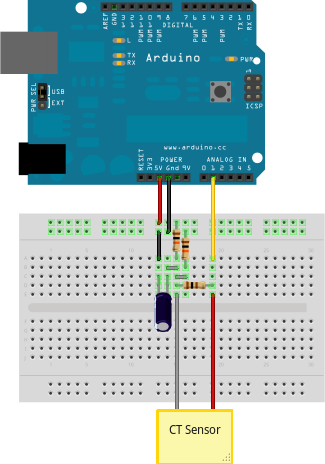

How to build an Arduino energy monitor - measuring mains current only.

This guide details how to build a simple energy monitor on a breadboard that can be used to measure how much electrical energy you use in your home. It measures current, but uses an assumed fixed value for voltage (230V, if you're in the UK) and calculates apparent power. Although not as accurate as a monitor that measures voltage as well as current, it is a method commonly used in commercially available whole house energy monitors for reasons of simplicity and cost.
Here's how to build it:
Step One – Gather Components
You will need:
1 Arduino
Current sensing electronics
1 CT sensor YHDC SCT-013-000
1 Burden resistor 18 Ohms if supply voltage is 3.3V, or 33 Ohms if supply voltage is 5V.
2 10k Ohm resistors (or any equal value resistor pair up to 470k Ohm)
1 10uF capacitor
Other
A breadboard and some single core wire.
Oomlout has a good Arduino + breadboard bundle here £29
Step Two – Assemble the electronics
The monitor consists of the current sensor (which produces a signal proportional to the mains current) and the sensor electronics that convert the signal into a form the Arduino can use.
For a circuit diagram and detailed discussion of sensors and electronics see:
CT Sensors - Interfacing with an Arduino
Assemble the components per the diagram above.
Step Three – Upload the Arduino Sketch
The sketch is the software that runs on the Arduino. The Arduino converts the raw data from its analog input into human readable values, then sends them to the serial port monitor.
a) Download EmonLib from github and place it in your Arduino libraries folder.
Download: EmonLib
b) Upload the "current only" example:
#include "EmonLib.h" // Include Emon Library EnergyMonitor emon1; // Create an instance void setup() { Serial.begin(9600); emon1.current(1, 111.1); // Current: input pin, calibration. } void loop() { double Irms = emon1.calcIrms(1480); // Calculate Irms only Serial.print(Irms*230.0); // Apparent power Serial.print(" "); Serial.println(Irms); // Irms }
c) Open the Arduino serial window
You should now see two columns of values. Apparent power on the left, RMS current on the right.
Re: How to build an arduino energy monitor - measuring current only
I have put a 6 channel version of the current only model to monitor two 3 phase motors. I have one ct on each leg of three phase of each motor. Then I hooked up the arduino to LCD and will output the amp draw to LCD screen. My problem is when I power it off of a 9 volt wall wart Analog 0 reads around 30 to 60, when I power it off of usb from my computer it will A0 will read zero just like the others. This is without any CT's plugged in. Someone told me I probably need a 10k pull down resistor. Just wondering if you agree or would this affect the circuit in a bad way.
Any Help you can give me would be much appreciated. Thanks.
Re: How to build an arduino energy monitor - measuring current only
When reading actual current A0 will read about 4x higher that A1-A5. Even using the same ct. Do I just need to scale it back hat much??
Re: How to build an arduino energy monitor - measuring current only
Hello Hazmatt, I dont know why this should happen? Have you tried swapping the CT's and so on? Amin did I think have a similar sounding problem with analog input 0, problem being solved when moving to other pins. Could you have overloaded the input at some point? Have you another arduino at hand to see if the problem is the same?
Re: How to build an arduino energy monitor - measuring current only
I figured it out my problem was I forgot to complete connection of CT to burden resistor. I am so sorry. Thanks for your great tutorial thouh it was alot of help.
Re: How to build an arduino energy monitor - measuring current only
hi!
i have built this monitor with efergy ct sensor and 100 ohm burden resistor and i'm experiencing some problems
if i connect light loads (for example 60watt) everything works okk, but:
1) if i do not connect any device to the monitor i still read something like 10 watt!!!
2) if i connect big loads (from 300 to 2000 watt) the monitor reads wrong values (for example 290 instead of 300, 1700 instead of 2000, etc....)
any idea?
thank you very much!!
Re: How to build an arduino energy monitor - measuring current only
Its normal to measure something (10watts) when nothing is connected as analog reading go from 0 to 1024 so sometimes a 1 in the reading leads to something like 10 or 20 watts.
as for higher loads, you need to calibrate the unit with big loads so that this phenomenom is reduce to the max. but if your error is 290/300 then i guess is not that bad. as for 1700 instead of 2000, calibrate again.
Re: How to build an arduino energy monitor - measuring current only
Is this project measures true rms?
Re: How to build an arduino energy monitor - measuring current only
There is possible to calculate Real Power using current only ?
Re: How to build an arduino energy monitor - measuring current only
I'm afraid not, you really need the voltage measurement.
Re: How to build an arduino energy monitor - measuring current only
Hi Trystan,
Still waiting for the AC-AC adapter but couldn't wait to test the current only setup. It works beautifully, but only with purely resistive loads...
And also with something strange: it shows the correct results only with ICAL = 0.07 in the sketch... is it because my burden resistor is too small?
Amin